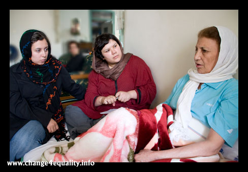
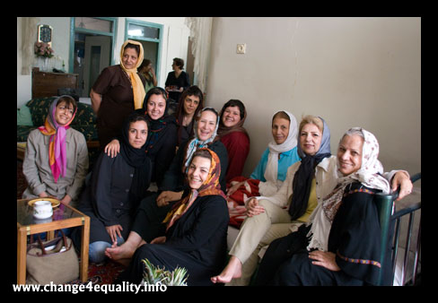

|
|

گفتگو با مادر محبوبه کرمی
من به داشتن دختری مثل محبوبه افتخار می کنم
گفتگو: دلارام علی،مریم حسین خواه
شنبه15 تیر 1387
چند روز قبل به همراه چند نفری از اعضای کمپین یک ملیون امضا برای عیادت از مادر محبوبه کرمی (از اعضای کمپین یک ملیون امضا که روز 24 خرداد حوالی پارک ملت دستگیر شد و همچنان نیز در بازداشت به سر می برد)، به خانه قدیمی و صمیمی آنها رفتیم و همین دیدار بهانه ای شد برای یک گفتگوی کوتاه با مادر محبوبه در رابطه با وضعیت وی.
خانم مساعدی چند روز از بازداشت محبوبه می گذرد و شما چطور از بازداشت او مطلع شدید؟
محبوبه روز 24 خرداد دستگیر شد.جمعه حوالی ساعت 10 صبح بود که از منزل خارج شد ، قرار بود برای خرید به میدان تجریش برود.حدود یک ساعت بعد با من تماس گرفت و گفت سوار اتوبوس شده و در حال برگشتن به منزل است ، اما یک ربع بعد تلفن دوباره زنگ زد و پسرم از روی شماره ای که افتاده بود گفت که محبوبه است.من هم با خودم فکر کردم شاید زنگ زده که بگوید می خواهد به جای دیگری هم برود گوشی را برداشتم و محبوبه گفت که در ترافیک مانده است.زنگ زده بود ک من نگران نشوم ، می گفت مسیر خیلی شلوغ است.تلفن را قطع کردم و چند لحظه بعد او دوباره زنگ زد.واقعا گیج شده بودم که چرا مدام تماس می گیرد اما اینبار که تلفن را برداشتم فقط صدای فریاد می شنیدم.مدام می پرسیدم محبوبه چیزی شده؟این صدای جیغ کیست؟اما جوابی نمی داد، صدای داد و فریاد می آمد.چند لحظه بعد محبوبه سراسیمه گفت دارند ما را دستگیر می کنند. ما را از ماشین بیرون کشیدند و مانتویم کاملا پاره شده است.از او پرسیدم چه کسی دستگیرتان می کند؟گفت :لباس شخصی ها و تلفن قطع شد.
بعد از آنکه تماستان با محبوبه قطع شد چه کردید؟
به چند نفری از دوستان او در کمپین یک ملیون امضا زنگ زدم و سپس راهی وزا شدیم چون معمولا مرسوم است که بازداشتی ها را اول به آنجا می برند اما آنجا هیچ جوابی به ما ندادند و مدام می گفتند که آنها را به اینجا نیاورده اند.هر چند که بعدا محبوبه گفت که آنها را یک راست به اوین برده بودند و معلوم شد که آن شب آنها دروغ نمی گفتند اما از بس ما هر بار شنیده بودیم که می گویند کسی اینجا نیست و بعد معلوم می شود که آنجا بوده اند ما باور نمی کردیم.

پس از آنکه از وزرا جوابی نگرفتید چه اقدامی کردید؟
چند بار به اوین مراجعه کردیم.هم خودمان هم وکیلش اما درست جوابمان را نمی دادند والبته کم کم فهمیدیم که تعداد زیادی آن روز دستگیر شده اند و به خانواده های آنان نیز پاسخی نداده اند.ما هم وقتی نتیجه ای نگرفتیم بیشتر منتظر تماس خود او شدیم .
محبوبه پس از بازداشت کی برای اولین بار با شما تماس گرفت؟
حدود 10 روز از او هیچ خبری نداشتیم تا بلاخره خودش تماس گرفت.البته مکالمه ما شاید 10،11 ثانیه بیشتر طول نکشید و او در این چند لحظه مدام حال من و پدرش را می پرسید و اینکه آیا برای عمل جراحی به بیمارستان رفتم یا خیر، چون من درست فردای روزی که محبوبه بازداشت شد نوبت عمل داشتم ولی به خاطر استرس شدیدی که از بازداشت او گرفته بودم به بیمارستان نرفتم و عملم را عقب انداختم.
آیا اطلاعی از محل بازداشتش هم به شما داد؟
بله ، گفت که در بند 209 زندان اوین است.
بعد از این تماس آیا تماس دیگری هم با او داشتید؟
بله ،هفته گذشته که برای عمل جراحی به بیمارستان رفتم تماس گرفت تا حالم را جویا شود.گفت که به بند عمومی منتقل شده و حدود 10 خانم دیگر هم با او در بند عمومی هستند.از وضعیت سایرین هم اطلاع خاصی نداشت. اما می گفت عده ای همان روزهای اول با قید کفالت یا وثیقه آزاد شده اند.
از وضعیت خودش در زندان چه می گفت؟
می گفت که وقتی در بند 209 بودند مدام از آنها بازجویی می کردند و در رابطه با کمپین هم سئوالاتی از او پرسیده اند.می گفت روزهای اول برخورد بسیار بدی با آنها داشته اند و حتی در هنگام بازجویی از الفاظ رکیکی هم استفاده می کرده اند.اما به مرور رفتارشان بهتر شده است.در رابطه با بند عمومی هم می گفت که کیفیت غذای زندان بسیار بد است و در ضمن به آنها اجازه استفاده از هواخوری هم داده نشده است.محبوبه می گفت حال جسمی دو نفر از کسانی که با او در بند عمومی هستند وخیم است.یکی از آنها آسم دارد و دیگری هم که خانم پزشکی است از ناحیه چشم دچار آسیبی جدی شده است.او می گفت بدن های اکثر ما همچنان کبود است و خودش فکر می کرد شاید یکی از دلایلی که آنها را هنوز آزاد نکرده اند همین آثار کبودی باشد.

وقتی محبوبه از بند عمومی با شما تماس گرفت آیا اطلاعی از نحوه بازداشتش هم به شما داد؟
بله،گفت ما در اتوبوس بودیم که حوالی پارک ملت تعداد لباس شخصی به طرف اتوبوس هجوم آوردند و با باتوم به درهای اتوبوس می کوبیدند.در ابتدا راننده درها را باز نکرد اما آنها این کار را ادامه دادند و بلاخره او هم مجبور شد که در را باز کند سپس در بخش مردانه شروع کردند به پیاده کردن مردها و برای این کارآنها را با باتوم می زدند.وقتی من اعتراض کردم که مگر اینها چه کرده اند که این طور با آنها رفتار می کنید به طرفم هجوم آوردند و به زور از اتوبوس پیاده ام کردند ،طوری که منتویی که تنم بود پاره شد.آنقدر با ما بد رفتاری کردند و آنقدر خشن برخورد کردند که نه تنها آثار کبوده هنوز روی تمام بدنم است که حتی اجازه ندادند کیفم را اتوبوس بردارم و تمام وسایلم در اتوبوس جا ماند.
در این مدت موفق به ملاقات با او هم شده اید؟
من یک بار برای دیدنش رفتم.روز سه شنبه ای که روز ملاقات زندانی های بند عمومیست.اما موفق به ملاقات نشدم.ظاهرا به وکیلش گفته بودند که ممنوع الملاقات است.بعد از آن هم برای جراحی به بیمارستان رفتم و متاسفانه پدرش هم بیمار است و توان پیگیری کار او را ندارد.اما بلاخره همین سه شنبه برادرش موفق شد او را ملاقات کند تا از این طریق بتوانیم مقداری پول و لباس به دستش برسانیم که متسفانه لباسهایش را نپذیرفتند.
نزدیک به 20 روز از بازداشت محبوبه می گذرد بی آنکه حتی دلیل بازداشت وی و یا وضعیت او مشخص شود ، شما به عنوان مادر او این روزها چه احساسی دارید ؟
من یک مادرم و طبعا نگران حال و وضعیت دخترم هستم اما من به داشتن دختری مثل او و تمام همراهان او در کمپین یک ملیون امضا افتخار می کنم ، محبوبه وقتی به من زنگ زد اولین نکته ای که گفت این بود که در زندان توانسته با تعداد زیادی از خانم هایی که به همراه او بازداشت شده اند در رابطه با کمپین صحبت کند و آنها نیز علاقمند شده اند که به این حرکت بپیوندند و این برای من مایه افتخار است.حق تمام کسانی که مثل محبوبه قدم در این راه گذاشته اند باتوم نیست ، باید مروارید نثار سراپایشان کرد .
با سپاس از وقتی که به این گفتگو اختصاص دادید